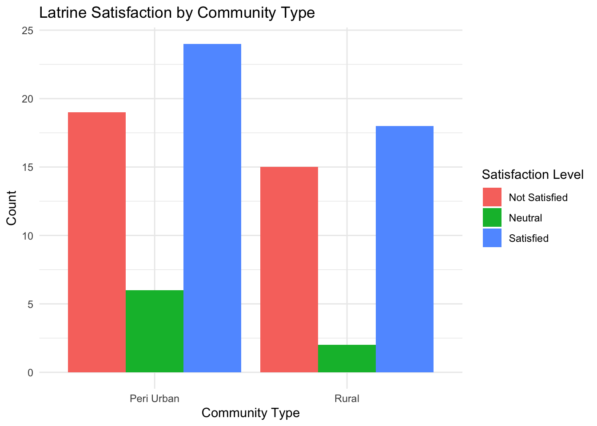

This dataset was collected in October 2020 from Dowa and Thyolo Districts, Malawi, using the mWater survey platform. It captures detailed information on household sanitation practices and latrine usage across both rural and peri-urban communities. The survey was conducted by trained enumerators working with BASEflow Malawi as part of efforts to document and improve Water, Sanitation, and Hygiene (WASH) infrastructure and behavior in the region.
Potential Use Cases
This data is a valuable resource for multiple stakeholders, including:
Local Government & Planners: To inform sanitation infrastructure planning and budgeting in rural and peri-urban Malawi.
Public Health Practitioners: To study the relationship between latrine use and hygiene-related health outcomes.
WASH Sector NGOs: To identify service delivery gaps, monitor impact, or design targeted behavior change programs.
Researchers & Academics: For sanitation behavior studies, infrastructure sustainability, and social acceptability of different latrine models.
Donors & Development Partners: To assess community sanitation needs, target investments, and support SDG 6 (Clean Water and Sanitation).
Installation
You can install the development version of dowalatrinesurvey from GitHub with:
# install.packages("devtools")
devtools::install_github("openwashdata/dowalatrinesurvey")
## Run the following code in console if you dont have the packages
## install.packages(c("dplyr", "knitr", "readr", "stringr", "gt", "kableExtra"))
library(dplyr)
library(knitr)
library(readr)
library(stringr)
library(gt)
library(kableExtra)Alternatively, you can download the individual datasets as a CSV or XLSX file from the table below.
- Click Download CSV. A window opens that displays the CSV in your browser.
- Right-click anywhere inside the window and select “Save Page As…”.
- Save the file in a folder of your choice.
| dataset | CSV | XLSX |
|---|---|---|
| dowalatrinesurvey | Download CSV | Download XLSX |
Data
The package provides access to Latrine Household Data for Dowa and Thyolo Districts in Malawi for the year 2020.
dowalatrinesurvey
The dataset dowalatrinesurvey contains 89 observations and 80 variables
dowalatrinesurvey |>
head(3) |>
gt::gt() |>
gt::as_raw_html()| submitted_on | community_type | latitude | longitude | traditional_authority | district | familiar_sanitation_types | latrines_in_community | sanitation_system_home | photo_sanitation_facility | sanitation_location_to_home | purchase_installation_process | latrine_installed | system_duration_magnitude | system_duration_unit | latrine_builder | facility_in_use | is_pit_lined | pit_lining_material | other_waste_disposed | other_waste_specified | biogas_generation | toilet_build_cost | cost_affordability | reasonable_cost_magnitude | reasonable_cost_unit | install_duration_magnitude | install_duration_unit | latrine_usage_process | safe_for_vulnerable | adapted_for_disabled | men_use_for_urination | liked_features | liked_features_other | sit_or_squat | currently_do | used_at_night | has_light | bring_own_light | bring_own_light_comments | odor_control | has_vent_pipe | prefer_less_odor | satisfaction_with_latrine | issues_with_animals | animal_issues_other | ideal_latrine_description | latrine_within_30m_water | latrine_distance_to_water | water_source | flush_with_water | latrine_description | soil_description | soil_description_other | latrine_user_count | latrine_built_year | expected_lifespan_magnitude | expected_lifespan_unit | privacy_enclosure_other_uses | above_ground_maintenance | above_ground_maintenance_other | above_ground_cleaning | uses_cleaning_chemicals | maintenance_frequency | maintenance_by | maintenance_by_other | maintenance_cost | cleaning_major_issue | pit_latrine_condition | is_filled_up | is_replacement | previous_filled_count | fill_up_speed | is_abandoned | reason_for_abandonment | is_emptied | why_not_emptied | why_not_emptied_other | emptying_frequency | emptying_method |
|---|---|---|---|---|---|---|---|---|---|---|---|---|---|---|---|---|---|---|---|---|---|---|---|---|---|---|---|---|---|---|---|---|---|---|---|---|---|---|---|---|---|---|---|---|---|---|---|---|---|---|---|---|---|---|---|---|---|---|---|---|---|---|---|---|---|---|---|---|---|---|---|---|---|---|---|---|---|---|---|
For an overview of the variable names, see the following table.
| variable_name | variable_type | description |
|---|---|---|
| submitted_on | character | The date and time when the survey form was submitted. |
| community_type | character | The classification of the community (e.g., rural, urban, periurban). |
| latitude | numeric | The latitude coordinate of the sanitation facility location. |
| longitude | numeric | The longitude coordinate of the sanitation facility location. |
| traditional_authority | character | The name of the traditional authority governing the survey area. |
| district | character | The district in which the survey was conducted. |
| familiar_sanitation_types | character | Types of latrines, toilets, or sanitation systems the respondent is familiar with. |
| latrines_in_community | character | Whether there are latrine systems present in the respondents community. |
| sanitation_system_home | character | The specific type of sanitation system used at the respondents home or facility. |
| photo_sanitation_facility | character | A photo taken of the sanitation facility. |
| sanitation_location_to_home | character | The physical location of the sanitation facility in relation to the house (e.g., within compound, nearby). |
| purchase_installation_process | character | Description of how the latrine was purchased and installed. |
| latrine_installed | character | Whether the respondent or household installed any latrine system. |
| system_duration_magnitude | numeric | The numerical duration indicating how long the current latrine system has been in use. |
| system_duration_unit | character | The unit of time (e.g., years, months) for how long the system has been used. |
| latrine_builder | character | The person(s) or organization that helped build the toilet. |
| facility_in_use | character | Indicates whether the latrine facility is currently being used. |
| is_pit_lined | character | Whether the latrine pit is lined for structural stability. |
| pit_lining_material | character | The material used to line the pit (e.g., bricks, concrete). |
| other_waste_disposed | character | Additional nonhuman waste disposed of in the latrine. |
| other_waste_specified | character | Details or specification of the other types of waste disposed. |
| biogas_generation | character | Whether the sanitation system generates biogas. |
| toilet_build_cost | character | Reported cost of constructing the toilet. |
| cost_affordability | character | Perception of how affordable it was to construct the toilet. |
| reasonable_cost_magnitude | numeric | Estimated amount considered reasonable for building a latrine. |
| reasonable_cost_unit | character | Unit of the reasonable cost (e.g., MWK, USD). |
| install_duration_magnitude | numeric | Time taken to construct the toilet (numeric value). |
| install_duration_unit | character | Unit for time taken (e.g., days, weeks). |
| latrine_usage_process | character | Stepbystep user explanation of how the latrine is used. |
| safe_for_vulnerable | character | Whether the latrine is considered safe for children, elderly, and persons with disabilities. |
| adapted_for_disabled | character | Whether the latrine is physically adapted for disabled users (based on observation). |
| men_use_for_urination | character | If men in the community consistently use latrines for urination. |
| liked_features | character | Features of the latrine that users appreciate. |
| liked_features_other | character | Additional specific features liked, as specified by respondent. |
| sit_or_squat | character | Preferred toilet posture (sitting or squatting). |
| currently_do | character | Actual practice (sitting or squatting) during use. |
| used_at_night | character | Whether the latrine is used during nighttime hours. |
| has_light | character | If there is a light source inside the latrine. |
| bring_own_light | character | Whether users bring their own light when using the latrine at night. |
| bring_own_light_comments | character | Comments or descriptions of the type of light used or brought. |
| odor_control | character | Whether controlling odor in the latrine is a concern. |
| has_vent_pipe | character | Indicates if the latrine has a ventilation pipe. |
| prefer_less_odor | character | Whether the respondent would prefer a latrine with less odor. |
| satisfaction_with_latrine | character | Respondents overall satisfaction with their current latrine. |
| issues_with_animals | character | Whether the latrine has experienced issues with rodents or burrowing animals. |
| animal_issues_other | character | Additional details about animalrelated issues. |
| ideal_latrine_description | character | Description of a respondents ideal latrine setup. |
| latrine_within_30m_water | character | Whether a latrine is located within 30 meters of a drinking water source. |
| latrine_distance_to_water | numeric | Measured distance from the latrine to the nearest water source (in meters). |
| water_source | character | The main source of water for the household. |
| flush_with_water | character | Whether water is used to flush the latrine. |
| latrine_description | character | Narrative description of the latrine owned or used. |
| soil_description | character | Type and condition of soil around the latrine. |
| soil_description_other | character | Further details about the soil condition if not covered in options. |
| latrine_user_count | character | Number of people who use the latrine. |
| latrine_built_year | character | Year in which the latrine was built. |
| expected_lifespan_magnitude | numeric | How long the latrine is expected to last (numeric). |
| expected_lifespan_unit | character | Unit of expected lifespan (e.g., years, months). |
| privacy_enclosure_other_uses | character | Whether the latrine privacy area is used for other activities (e.g., bathing, changing clothes). |
| above_ground_maintenance | character | Types of maintenance done on the aboveground structure of the latrine. |
| above_ground_maintenance_other | character | Additional details on maintenance tasks not listed. |
| above_ground_cleaning | character | Cleaning practices used for the aboveground part of the latrine. |
| uses_cleaning_chemicals | character | Whether any chemicals are used for cleaning. |
| maintenance_frequency | character | How often the latrine is maintained or cleaned. |
| maintenance_by | character | Who is responsible for maintenance and cleaning of the latrine. |
| maintenance_by_other | character | Other persons or roles responsible, if not listed. |
| maintenance_cost | character | Estimated cost spent on maintaining and cleaning the latrine. |
| cleaning_major_issue | character | Whether cleaning the latrine is a major concern for the user. |
| pit_latrine_condition | character | Current physical condition of the pit latrine. |
| is_filled_up | character | Whether the latrine pit is currently filled up. |
| is_replacement | character | If the current latrine is a replacement for a previously filled one. |
| previous_filled_count | numeric | Number of pit latrines that filled up before this one. |
| fill_up_speed | character | How quickly the previous latrine filled up. |
| is_abandoned | character | Whether the latrine is abandoned or potentially reusable. |
| reason_for_abandonment | character | Reason why the latrine was abandoned. |
| is_emptied | character | Whether the latrine has ever been emptied. |
| why_not_emptied | character | Reason why the latrine hasnt been emptied. |
| why_not_emptied_other | character | Additional specification on why the latrine hasnt been emptied. |
| emptying_frequency | character | How often the latrine is emptied (if applicable). |
| emptying_method | character | The method used for emptying the pit latrine. |
Visualizations
library(dowalatrinesurvey)
# Visualization 1 Spatial Distribution Map by Community Type
# Purpose is to show how households with different community_type (Rural vs Peri-Urban) are spatially distributed across your study area.
library(dplyr)
library(ggplot2)
library(maps)
library(stringr)
# Clean community_type in dowalatrinesurvey
dowalatrinesurvey <- dowalatrinesurvey %>% mutate(community_type = trimws(community_type))
# Get Malawi map data from maps package
malawi_map <- map_data("world", region = "Malawi")
# Plot using dowalatrinesurvey
ggplot() +
geom_polygon(
data = malawi_map,
aes(x = long, y = lat, group = group),
fill = "gray90",
color = "black"
) +
geom_point(
data = dowalatrinesurvey,
aes(x = longitude, y = latitude, color = community_type),
size = 3, alpha = 0.7
) +
coord_fixed(1.3) + # fix aspect ratio for lat/lon
labs(
title = "Spatial Distribution of Surveyed Households by Community Type",
x = "Longitude",
y = "Latitude",
color = "Community Type"
) +
theme_minimal()
# Visualization 2: Grouped bar chart showing count of latrine satisfaction by community type
# visually compare the levels of satisfaction with latrines between different types of communities
# (e.g., Rural vs Peri-Urban)
# Clean and factor satisfaction variable
data <- dowalatrinesurvey %>%
mutate(
satisfaction_clean = str_extract(satisfaction_with_latrine, "^[0-9]"),
satisfaction_clean = factor(satisfaction_clean, levels = c("1", "2", "3"),
labels = c("Not Satisfied", "Neutral", "Satisfied"))
) %>%
filter(!is.na(satisfaction_clean)) # Remove NA
# Summarize counts
satisfaction_summary <- data %>%
group_by(community_type, satisfaction_clean) %>%
summarise(count = n(), .groups = "drop")
# Plot grouped bar chart (counts)
ggplot(satisfaction_summary, aes(x = community_type, y = count, fill = satisfaction_clean)) +
geom_bar(stat = "identity", position = "dodge") + # side-by-side bars
labs(
title = "Latrine Satisfaction by Community Type",
x = "Community Type",
y = "Count",
fill = "Satisfaction Level"
) +
theme_minimal()
License
Data are available as CC-BY.
Citation
Please cite this package using:
citation("dowalatrinesurvey")
#> Um Paket 'dowalatrinesurvey' in Publikationen zu zitieren, nutzen Sie
#> bitte:
#>
#> Mhango E (2025). "dowalatrinesurvey: Household Latrine Survey Data
#> from Dowa and Thyolo, Malawi."
#> <https://github.com/openwashdata/dowalatrinesurvey>.
#>
#> Ein BibTeX-Eintrag für LaTeX-Benutzer ist
#>
#> @Misc{mhango:2025,
#> title = {dowalatrinesurvey: Household Latrine Survey Data from Dowa and Thyolo, Malawi},
#> author = {Emmanuel Mhango},
#> year = {2025},
#> url = {https://github.com/openwashdata/dowalatrinesurvey},
#> abstract = {Contains survey data collected in October 2020 from households in Dowa and Thyolo Districts, Malawi. The dataset includes detailed information on household sanitation practices, latrine infrastructure, usage patterns, maintenance behaviors, and user preferences across rural and peri-urban communities. Data was collected using the mWater survey platform by BASEflow Malawi enumerators.},
#> version = {0.0.0.9000},
#> }